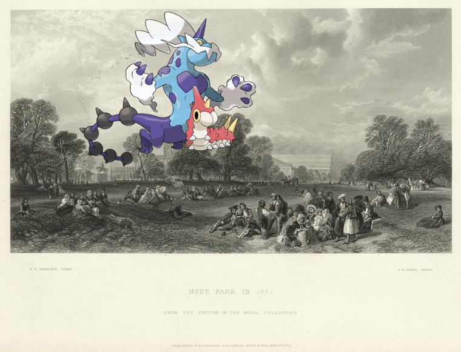
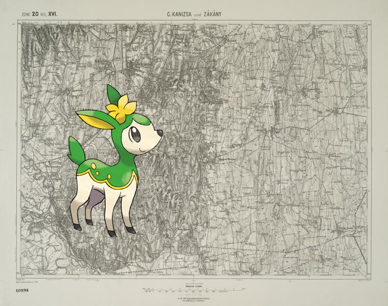

Pokémon in the NYPL archives
2018-9-14 04:10:03
Lickitung on
Shoes
!
2018-9-14 02:10:05
Teddiursa ;
Fifth Avenue Restaurant
!
2018-9-14 00:10:03
Aggron +
LUNCH [held by] NORDDEUTSCHER LLOYD BREMEN [at] "SCHNELLDAMPFER ""HOHENZOLLERN""" (SS;)
.
2018-9-13 22:10:03
Weezing –
Habit of a merchant of Arabia in 1568. Merchant Arabe.
.
2018-9-13 20:10:08
Genesect, Klang +
Cotton on porch of sharecropper's home, Maria plantation, Arkansas
.
2018-9-13 18:10:06
Pikachu –
Letter to [Gov. David Bradie Mitchell?]
2018-9-13 16:10:04
, Exploud on
26B - N.Y. City (Aerial Set).
.
2018-9-13 14:10:07
Vanillite @
The three graces
!
2018-9-13 12:10:03
Monferno +
[Gov. Clinton and lady.]
.
2018-9-13 10:10:04
@
Floor plans of Terrace Court.
2018-9-13 08:10:04
Larvesta |
Germany, Prussia, 1790-1792
2018-9-13 06:10:06
Swinub |
Chink Chink (Don't talk to me of marriage)
.
2018-9-13 04:10:05
Purugly –
Double Page Plate No. 1: [Bounded by Marshall St., Little St., Evans St., (United States Navy Yard) Hudson Ave., Johnson St., Main Fulton St., Clark St., (East River Docks) Furman ave., Fulton St., Water St., Dock St, Plymouth St. and Pearl St.]
2018-9-12 22:10:05
Beheeyem, Bidoof +
Corporal Trim reading the sermon upon Conscience [Frontispiece]
.
2018-9-12 20:10:04

, Wurmple on
Hyde Park in 1851
2018-9-12 18:10:04
, Mightyena +
Ontario (Village) Business Notices. ; Ontario (Town) Business Notices. ; Ontario [Township]
2018-9-12 16:10:04
Frogadier, Chimecho +
The scepter with the cross, borne by the Earl of Peterboron; the golden spurrs, borne by the Lord Grey; ...The Earl Marshall of England.
!
2018-9-12 14:10:04
Meloetta-Aria on
DINNER [held by] NORDDEUTSCHER LLOYD BREMEN [at] SS HOHENZOLLERN (SS;)
!
2018-9-12 12:10:03
Gardevoir @
DAILY MENU, LUNCHEON [held by] HOTEL ST. REGIS [at] "NEW YORK, NY" (HOTEL;)
!
2018-9-12 10:10:04
Granbull –
Manhattan, V. 7, Plate No. 64 [Map bounded by Central Park West, 5th Ave.]
!
2018-9-12 08:10:04
Lucario ;
Fleuves sans eau.
!
2018-9-12 06:10:04
Helioptile –
Edward Laight.
.
2018-9-12 04:10:04

on
G. Kanizsa und Zakany.
2018-9-12 02:10:04
Raichu +
Ticknor, [William D.], ALS to. Oct. 9, 1857.
.
2018-9-12 00:10:07
Regice @
Outline of Robinson's Real Estate Atlas of New York City (Manhattan Island)
.
2018-9-11 22:10:05
Nuzleaf |
Document
2018-9-11 20:10:04
Altaria on
Shâhnâmah [Text Page]
.
2018-9-11 18:10:05
Terrakion on
Map of the county of Montgomery and Fulton
2018-9-11 16:10:05
Trapinch +
Rigg's
!
53
|
52
|
51
|
50
|
49
|
48
|
47
|
46
|
45
|
44
|
43
|
42
|
41
|
40
|
39
|
38
|
37
|
36
|
35
|
34
|
33
|
32
|
31
|
30
|
29
|
28
|
27
|
26
|
25
|
24
|
23
|
22
|
21
|
20
|
19
|
18
|
17
|
16
|
15
|
14
|
13
|
12
|
11
|
10
|
9
|
8
|
7
|
6
|
5
|
4
|
3
|
2
|
1
|
0